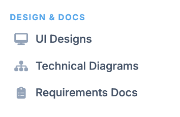

Design and Docs

Design & Docs, serves as a centralized hub for managing project-related visual and technical documentation. It provides a quick overview of the assets currently associated with your project.
It has 3 submenus:
UI Designs
This submenu is your primary workspace for all visual assets related to the user interface. It is currently highlighted, indicating it is the active view.
- Purpose: Stores high-fidelity mockups, wireframes, and interactive prototypes.
- Current Count: 30 items.
- Best For: Reviewing screen layouts, branding elements, and user flow animations.
Technical Diagrams
This submenu organizes the structural and logic-based visualizations of the project.
- Purpose: Houses system architecture maps, flowcharts, entity-relationship diagrams (ERDs), and sequence diagrams.
- Current Count: 14 items.
- Best For: Understanding the underlying technical framework and how data moves through the system.
Requirements Docs
This submenu acts as the repository for formal project documentation and written specifications.